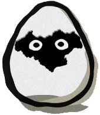

<html>
    <head>
        <meta charset="utf-8">
        <title>chat</title>
        <link rel="stylesheet" href="style.css">
        <link rel="stylesheet" href="https://use.fontawesome.com/releases/v5.1.0/css/all.css" integrity="sha384-lKuwvrZot6UHsBSfcMvOkWwlCMgc0TaWr+30HWe3a4ltaBwTZhyTEggF5tJv8tbt" crossorigin="anonymous">
    </head>

    <body>
        
        <header>
            <!--header部分-->
        </header>

        <div class="main">
                <!--メッセージを入力し、送信する要素-->
                <div class="msg_submit">
                    <form action="" method="POST" name="form" id="form">
                    <textarea  cols="10" name="input" id="input_field"  placeholder=" メッセージを入力"></textarea>

                    <!--デバック用(消してもOK)-->
                    <!--<input type="hidden" name="flg" value="1"/>-->

                    
                     <i  class="fas fa-paper-plane" onclick='snd_msg()'></i> 
                    </form>
                </div>

                <script>
                    /*-----デバック用データ-----*/
                    let title = "荷運びを手伝って！";

                    /*-----ここまで-----*/

                    document.write("<div class='msg_title'>");
                    
                    document.write(title);
                    
                    document.write("</div>");        
                </script>
   
                <div id="chat">
                    <!--ここに下記のscriptで動的に要素を追加される-->
                </div>

                
                <script>
                    //現在自分のチャットを見てるユーザーがuser1
                    
                    let i = 1;
                    let data;
                    let msgArea;

                    /*****websocketサーバの定義*****/
                    //websocketの接続先URL
                    let url = "ws://localhost:3000/test/chat";
                    //let url = "ws://127.0.0.1:5001";

                    //websocketオブジェクト
                    let ws = null;

                    //ユーザー名
                    let User = "user1";

                    //websocket接続(test.jsを実行させて接続テストしました)
                    ws = new WebSocket(url);

                    //メッセージを送信する関数
                    function snd_msg(){
                        //websocket接続(ここをコメントアウトしないとバグるので、削除予定)
                        //ws = new WebSocket(url);

                        let msg = document.getElementById('input_field').value;
                        let data = {user:User,text:msg};

                        //websocketでサーバーに送信
                        ws.send(JSON.stringify(data));
                    };

                        //websocketでメッセージを受け取った時の処理
                        ws.onmessage = function(msg){
                            data = JSON.parse(msg.data);
                            User = "user2"
                            
                        }

                    //要素を追加する関数
                    let event = function() { 
                        //e.preventDefault();
                        //デバッグ用
                        console.log("読み込んだ" + i + "回目です");
                        i = i + 1;
                        
                        //JSONを読み込む(websocketと接続できたので、何もなければ削除予定です)
                        /*data = {key: "message",
                                        value: {
                                        user: "user2",
                                        message: "自分のトークです"
                                    }
                                };*/


                            
                        console.log(data);
                        //id名chatのdivを習得
                        let parent = document.getElementById('chat');

                        //div要素を作成
                        let objD = document.createElement('div');

                        //data.textに含まれる改行コードを改行タグに変換
                        (data.text).replace(/\n/g, '<br>');

                        //送信元が自分か相手かでクラス名を変更
                        if(data.user === User){
                            //クラス名をrightに
                            objD.className = 'right';

                            //画像を表示させるdivを追加
                            objD.innerHTML = "<div class ='text_right'>" + data.text + "</div>" + "<div class='image_right'></div>";

                           

                        }
                        else{
                            //クラス名をleftに
                            objD.className = 'left';
                            
                            //画像を表示させるdivを追加
                            objD.innerHTML = "<div class='image_left'></div>" + "<div class ='text_left'>" + data.text + "</div>";
                        }
                         //要素を追加
                        parent.appendChild(objD);        
                };
                              
                    //メッセージを受け取る度に呼ばれます(テストして動いたが、今後何か問題が出てくるかも)
                    ws.addEventListener('message',event);

                </script>

                <!--戻るボタン-->
                <div class="return">
                    <a href="chat-title.html">
                    <i class="fas fa-reply"></i>
                    </a>
                </div>
                
                <!--位置情報を相手に送るボタン-->
                <div class="pin">
                    
                    <i class="fas fa-map-marker-alt"></i>
                </div>
                 
                <!--いいねボタン-->
                <div class="good">
                    
                    <i class="fas fa-thumbs-up"></i>
                </div>
        </div>       
        

        <footer>
            <!--footer部分-->
        </footer>
    </body>
</html>